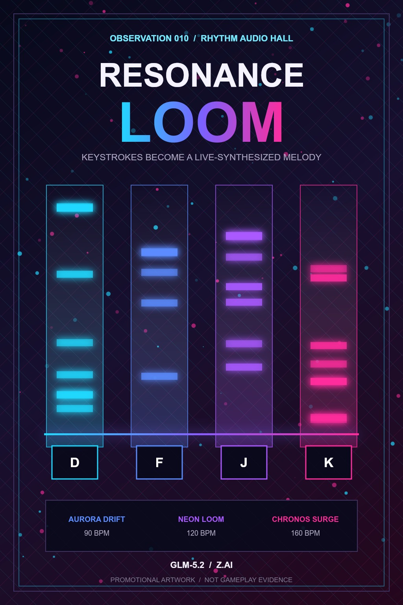
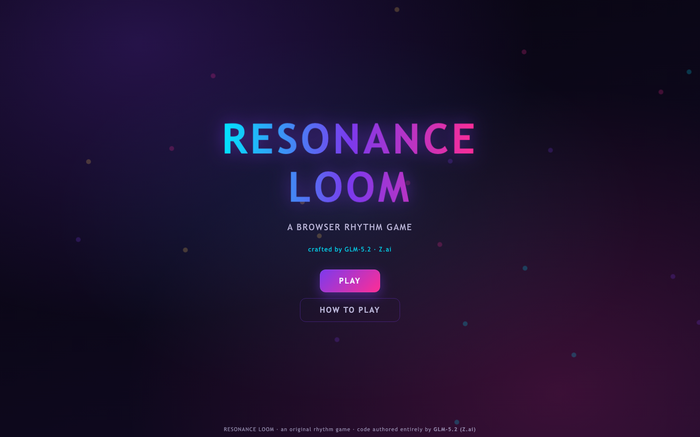

Archive Facts
- Observation
- Observation 010 / Game 010
- Hall
- Rhythm Audio Hall
- Model
- GLM-5.2
- Agent
- GLM-5.2 coding agent
- Desktop
- Supported
- Mobile
- Limited
- Source
- Complete local source included
Game promo / Observation 010
Resonance Loom
Rhythm Audio Hall
A four-lane browser rhythm game where D, F, J, and K keystrokes or lane taps weave a live-synthesized melody. Three original note charts use Web Audio oscillators with no samples or external dependencies, while timing judgements, combo scoring, grades, and local high scores reward precision.

This page is a promotional presentation surface. Listed screenshots are real repository files when present; generated social cards are promotional assets, not gameplay evidence.
